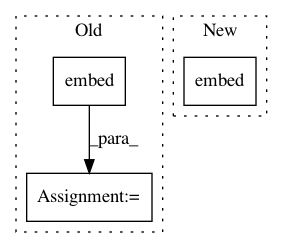

c420d6988619eac7ea994a41782807834ff9ebbe,pyannote/audio/embedding/approaches/triplet_loss.py,TripletLoss,loss_and_grad,#TripletLoss#Any#Any#,173
Before Change
X = batch["X"]
y = batch["y"]
fX = embed(X)
loss, fX_grad = value_and_grad(self.loss, argnum=0)(fX, y)
return {"loss": loss, "gradient": fX_grad}
After Change
def loss_and_grad(self, batch, embedding):
fX = self.embed(embedding, batch["X"])
y = batch["y"]
loss, fX_grad = value_and_grad(self.loss_y, argnum=0)(fX, y)
return {"loss": loss, "gradient": fX_grad}
In pattern: SUPERPATTERN
Frequency: 3
Non-data size: 3
Instances
Project Name: pyannote/pyannote-audio
Commit Name: c420d6988619eac7ea994a41782807834ff9ebbe
Time: 2017-05-11
Author: bredin@limsi.fr
File Name: pyannote/audio/embedding/approaches/triplet_loss.py
Class Name: TripletLoss
Method Name: loss_and_grad
Project Name: pyannote/pyannote-audio
Commit Name: d6b449edcbdaf559807aaff6bd3234f47134e303
Time: 2017-05-11
Author: bredin@limsi.fr
File Name: pyannote/audio/embedding/approaches/center_loss.py
Class Name: CenterLoss
Method Name: loss_and_grad
Project Name: uber/ludwig
Commit Name: a0d860d4ec3854c37c352613bf93913b6302327f
Time: 2020-04-17
Author: w4nderlust@gmail.com
File Name: ludwig/models/modules/category_encoders.py
Class Name: CategoricalEmbedEncoder
Method Name: call